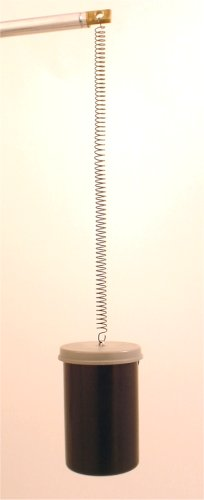

Oscilatorul mecanic
Modelul oscilatorului armonic este un model teoretic, obţinut prin idealizarea caracteristicilor oscilatorilor reali.
Când analizezi un oscilator real, modelul oscilatorului armonic îţi oferă primele indicii referitoare la evoluţia oscilatorului real.
 Provocarea 1A8−1
Provocarea 1A8−1
O cutie plină cu monezi este atârnată de un resort metalic cu multe spire (figura 1A8−1).
| 
| Fig. 1A8−1. Oscilator realizat dintr−o cutie plină cu monezi, atârnată de un resort metalic cu multe spire. |
Măsurând doar alungirea resortului în poziţia de echilibru, poţi oare anticipa perioada de oscilaţie a acestui oscilator real?
O cutie plină cu monezi este un corp relativ dens (masă mare în volum mic). Mişcarea sa în timpul oscilaţiilor va fi influenţată nesemnificativ de rezistenţa
la înaintare prin aer.
Totodată, un resort metalic este un corp relativ puţin masiv şi aproape perfect elastic. În timpul alungirii sale considerabile, spirele resortului doar
se răsucesc uşor - deformaţiile păstrându−se astfel în limita de elasticitate (figura 1A8−2).
Fig. 1A8−2. Răsucirea unei spire a resortului în timpul alungirii acestuia.
 Numim pendul elastic un sistem alcătuit dintr−un corp relativ dens, ataşat de un corp aproape perfect elastic şi având masa neglijabilă.
Numim pendul elastic un sistem alcătuit dintr−un corp relativ dens, ataşat de un corp aproape perfect elastic şi având masa neglijabilă.
Atârnând cutia cu monezi la capătul resortului, acesta se alungeşte până când forţa elastică echilibrează greutatea cutiei (figura 1A8−3):
unde Δl0 este alungirea resortului în poziţia de echilibru (cantitate pe care o poţi măsura uşor, cu o riglă).
|
| Fig. 1A8−3. Poziţia de echilibru a pendulului elastic. |
Când coordonata punctului de suspensie al cutiei este y (figura 1A8−4) şi alungirea resortului este Δl, forţa elastică
este:
|
| Fig. 1A8−4. O poziţie oarecare a pendulului elastic. |
În această poziţie, forţa totală asupra cutiei este rezultanta dintre forţa elastică (orientată în sus) şi greutatea cutiei (orientată în jos):
Folosind relaţia (1), obţii că forţa rezultantă asupra cutiei este:
Aceasta este o forţă de tip elastic! Chiar şi în prezenţa greutăţii, forţa rezultantă este proporţională cu coordonata faţă de poziţia de echilibru şi
îndreptată mereu către poziţia de echilibru.
Aşadar, cutia atârnată de resort ar trebui, într−o primă aproximaţie, să oscileze armonic!
Din relaţia (1) poţi exprima constanta elastică a resortului:
În cazul ideal al unui oscilator armonic, constanta de tip elastic este corelată cu masa şi pulsaţia oscilatorului:
Folosind relaţiile (2) şi (3), poţi obţine pulsaţia aşteptată a cutiei atârnată de resort:
Aşadar, perioada aşteptată a acestui oscilator este:
Trebuie doar să măsori alungirea resortului în poziţia de echilibru şi, conform relaţiei (4), poţi anticipa perioada de oscilaţie!
 Activitatea experimentală 1A8−1
Activitatea experimentală 1A8−1
Realizează un oscilator asemenea celui din figura 1A8−1 şi măsoară−i perioada de oscilaţie (cronometrând mai multe oscilaţii complete).
Poţi folosi acest cronometru!
Compară perioada măsurată cu cea dată de relaţia (4).
Deşi oscilaţia cutiei atârnată de resort este, invevitabil, amortizată, cutia efectuează sute de oscilaţii înainte ca amplitudinea sa să scadă de e
ori - oscilaţia este relativ slab amortizată. Ne−am aşteptat la aceasta, când am ales un corp relativ dens, atârnat de un resort metalic, cu multe
spire.
Totodată, "potrivirea" perioadei măsurate cu cea aşteptată conform relaţiei (4) este remarcabilă - în ciuda complicaţiilor oscilatorilor reali, modelul
idealizat al oscilatorului armonic poate furniza indicii valabile!